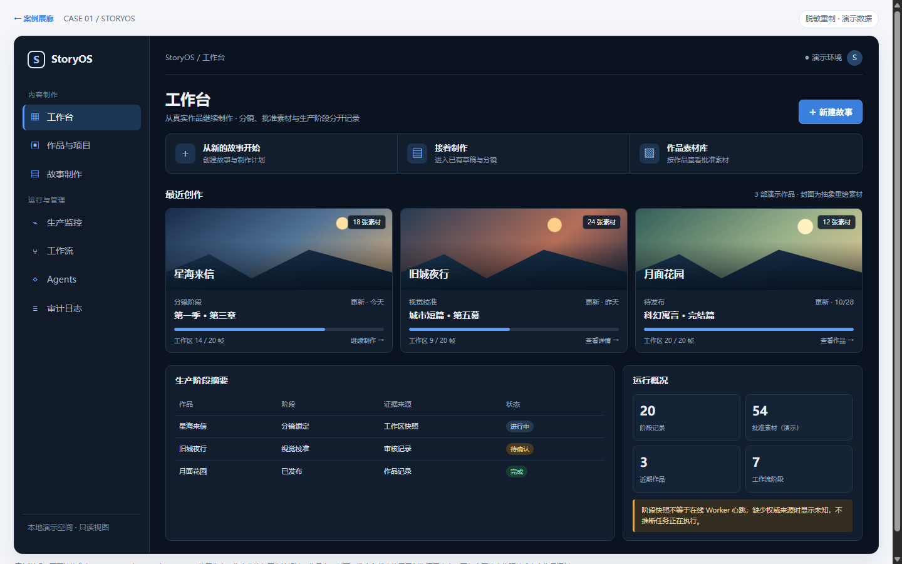
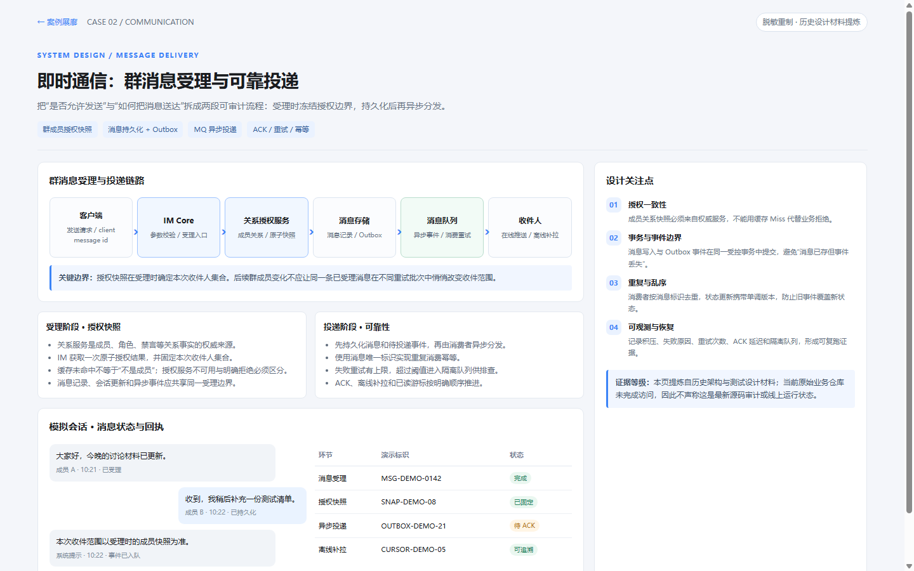
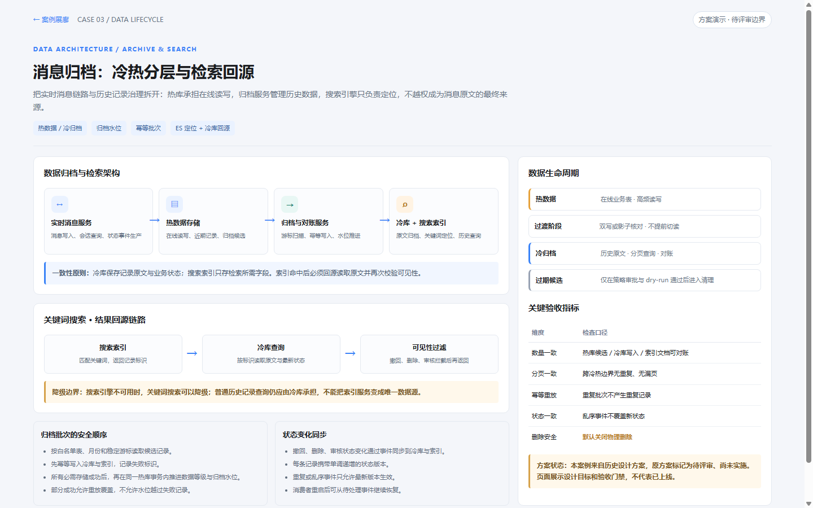
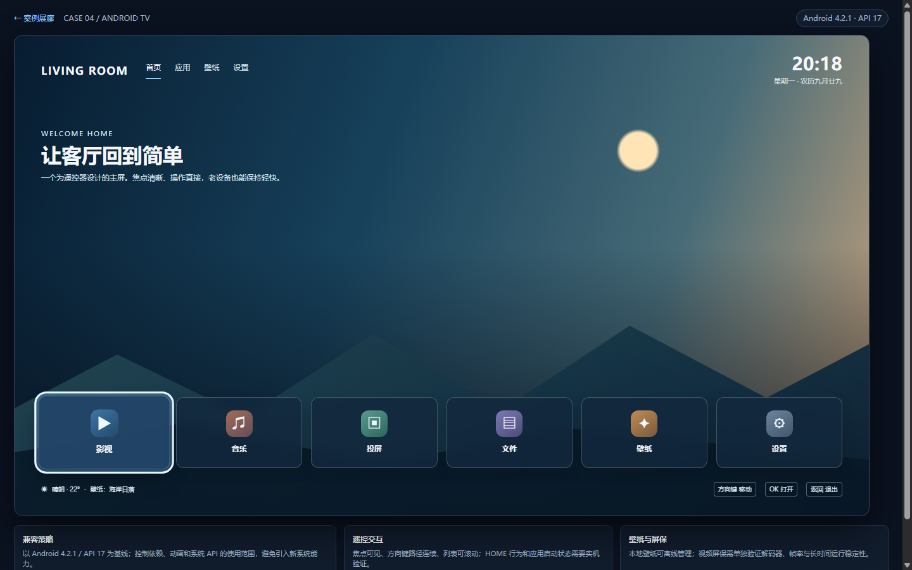
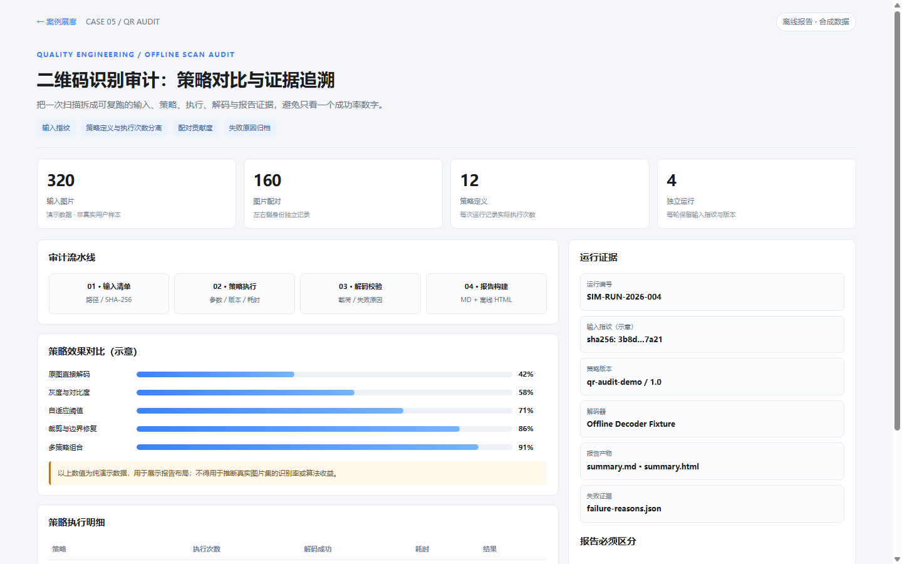

StoryOS · AI 内容生产工作台
工作台、作品库、批准素材与生产监控。真实项目结构参考，内容重绘。
五个场景分别展现 AI 创作工作台、IM 消息可靠性、冷热数据归档、旧版 Android TV 启动器和二维码审计。每个页面都是独立离线 HTML；预览来自对应 HTML，信息经过脱敏或重绘。

工作台、作品库、批准素材与生产监控。真实项目结构参考，内容重绘。

授权快照、Outbox、MQ、ACK 与恢复语义；从历史设计资料脱敏重绘。

归档水位、跨库一致性、幂等重试与 ES 检索回源。属于方案示例。

焦点高亮、遥控键、时钟、应用与壁纸。纯 HTML 概念重制，不是实机截图。

策略贡献、配对统计、证据指纹和失败追溯。统计值全部为合成数据。
GEN-UI 负责让 AI 的设计、审计、测试与验收输出有清楚的信息层级和可阅读的 HTML 形态。案例并不意味着原项目已发布、已上线或通过当前源码审计。查看 案例来源、脱敏规则与证据边界，或继续体验 带筛选与分页的离线工程报告。
GEN-UI · 公开案例展廊 · 离线可打开 · 所有业务展示数据均为合成或重制